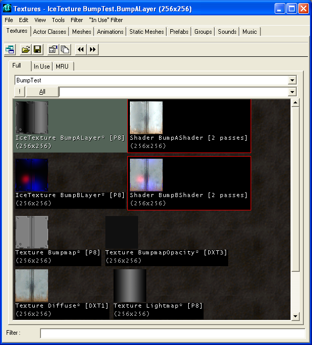
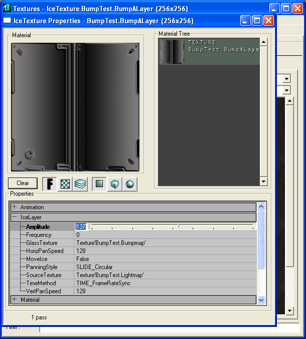
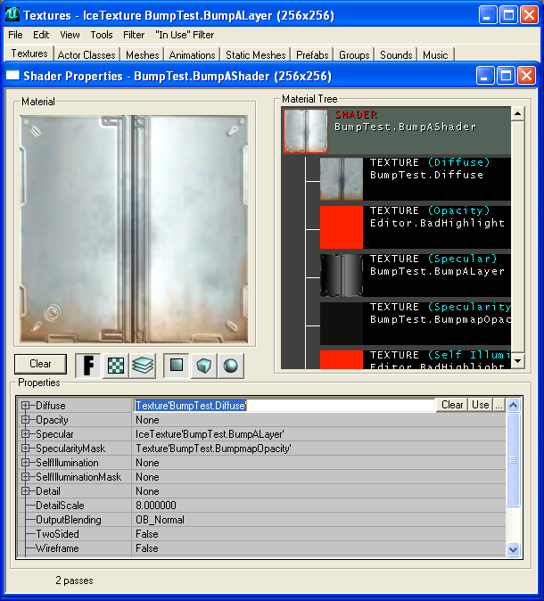

Pseudo-Bumpmapped Texture
This page explains how to make a pseudo bump mapped texture.
Credits
First of all, I would like to say thank you to these people who helped me to figure this thing out:
- elmuerte: He had some ideas which led to final compilation of what goes and where.
- Plouj: He showed me a screenshot of what UArchitect had in his Texture Browser.
- UArchitect: He made the said screenshot which displayed what he used for this technique.
Limitations
While this may or may not be the way that [Project Torlan] used, there are severe limitations to this method that are not immediately apparent when first thinking about this. First of all, this is not in any form bump mapping of even remotely close to it. It simply looks like it to a certain extent but nothing close to it at all. Thus there are some restrictions that I encountered:
- Light direction is assumed by LightMap
- Use of a lot of textures - About 5 textures for 1 result
- It is not affected by lights
- Increased CPU usage - I'm not sure what the percentage is, but because I used a realtime texture it does use CPU to an extentas it is rendered per frame.
- Limited light palette - The method used, must use a 256 color texture
- Small resultant textures - The maximum texture size is 256 x 256. While I don't know what the result is like if the bump map overlay is stretched over a large surface, 256 X 256 is rather small.
- Possible texture errors - Some complex shaders do not render well on certain cards, so a fallback option is recommended.
- Texture creation is at first trial and error
Benefits
So after all those possible limitations, there are some benefits however.
- If you mimic the movement of anything nearby to the lightmap movement, you may simulate proper bump mapping.
- There isn't a real noticeable slow down when using this technique
- It is not scripted, thus artists/mappers can do it
- The resultant texture is a shader, thus, it can be further modified for other purposes
- More possibilites exist with this and bump mapping is only 1 possibilty, more tinkering will result more issues
- It is possible to mimic actual light with the introduction of scripting [More on that in the future]
- It does enhance textures to look a bit better than just standard Phong shading
Method [Solidsnake](to madness)
Part 1

Importing the textures |
First you have to make your textures. You will need a minimum of 3 textures with a possibility of a 4th for an opacity control.
- Diffuse
- This is just a normal texture that you see normally in the game.
- Lightmap
- This is gradient map that you use to simulate the lighting on the wall or mesh. You can use a pregenerated lightmap from 3DSMax6 I believe. The darkest color should be (0, 0, 0) while the brightest color should be (128, 128, 128) ... experiement a little although I found that using that as the highest light brightness did not overwash my diffuse in the end. This texture *must* be 256 colors and 256 X 256 or the same texture size as you input for the IceTexture.
- Bumpmap
- This is basically a texture which depicts the height of things you want on the texture. The darkest color should be (1, 1, 1) and not (0, 0, 0) and the brightest can be anything but (255, 255, 255). I found that using a flat 128, 128, 128 of the middle of the height map and then I beleved and embossed in Adobe to produce the height map. It is not the best method, but by far the quickest. This texture *must* be 256 colors and 256 X 256 or the same texture size as you input for the IceTexture. It is best to use a grayscale image for this.
- Optional Opacity
- This controls the opacity of the resultant bump map. It is this textures alpha which controls it, so it can be merged with say the diffuse. But it is up to you. This allows some extra control in the resultant effects.
Part 2

Setting up the IceTexture... |
This is where you create the Ice Texture. Click on File → New. Select Real-Time Texture and select IceTexture. Enter the size of the texture, 256 X 256 is usually what you want since it offers the highest resolution. I'm not sure if this is just a code limit or an actual engine limit. It could be possible to edit that value for some large ice textures ...
In the appropriate fields enter the textures as shown in the image (Glass=Bumpmap, Source=Lightmap). To test your bump map effect, click MoveIce to false so that it moves your 'light map' instead. Play with the values. To set your lightmap, turn off the moving and adjust the Amplitude to shift the lightmap around.
Part 3

Bringing it all together. |
This is where we bring everything together. Make a new shader, and put the diffuse texture into diffuse, and then add the ice texture to specular and then finally if you wish an alpha into the specular mask.
Use the shader in a map and you have your result.
I am sure there is many other things that you can toy with to get better results such as the use of combiners and texture modifiers, but this is simply the result.
To get matching bump map movements, adjust the Ice Texture to simulate the movement.
Method [Xabora/Project Torlan]
Part 1
Importing of the Textures
(Borrowed These)
- Lightmap
- This is gradient map that you use to simulate the lighting on the wall or mesh. You can use a pregenerated lightmap from 3DSMax6 I believe. The darkest color should be (0, 0, 0) while the brightest color should be (128, 128, 128) ... experiement a little although I found that using that as the highest light brightness did not overwash my diffuse in the end. This texture *must* be 256 colors and 256 X 256 or the same texture size as you input for the IceTexture.
Added Note: For a neutral color/closest to the diffuse texture use (127,127,127).
- Bumpmap
- This is basically a texture which depicts the height of things you want on the texture. The darkest color should be (1, 1, 1) and not (0, 0, 0) and the brightest can be anything but (255, 255, 255). I found that using a flat 128, 128, 128 of the middle of the height map and then I beleved and embossed in Adobe to produce the height map. It is not the best method, but by far the quickest. This texture *must* be 256 colors and 256 X 256 or the same texture size as you input for the IceTexture. You can also use standard bumpmaps also (Must be 256 colors), along with greyscale.
Part 2
Setting up the IceTexture...
(This is the same)
This is where you create the Ice Texture. Click on File → New. Select Real-Time Texture and select IceTexture. Enter the size of the texture, 256 X 256 is usually what you want since it offers the highest resolution. I'm not sure if this is just a code limit or an actual engine limit. It could be possible to edit that value for some large ice textures ...
In the appropriate fields enter the textures as shown in the image (Glass=Bumpmap, Source=Lightmap). To test your bump map effect, click MoveIce to false so that it moves your 'light map' instead. Play with the values. To set your lightmap, turn off the moving and adjust the Amplitude to shift the lightmap around.
Part 3
Combiners
Make a new combiner, have the CombineOperation set to CO_Multiply.
Have Material1 set as your Diffuse Texture and Material2 as your Lightmap.
Apply the Combiner to a texture add a light... bingo... you have more control over the lighting around the bumpmap.
What else from here?
Bingo!
Bingo! |
This is a very elementry approach. There is still more things that are doable such as the creation of bumpmapped models. While it is not possible to use a scripted texture within the IceTexture (Otherwise it is possible to do a lot more things), it may be possible to adjust other paramaters within IceTexture through Unrealscript which leads to other such possibilities.
You can use colors in your light maps, and they do produce pleasing results.
Other possibilities are the introduction of larger texture for IceTexture. It'd be nice but I'm not holding my breath on that one.
Well, I hope this it! I spent an entire day and a sleepless night figuring this one out.
Almost forgot, here is the link to download my texture that I created for this: http://forums.beyondunreal.com/attachment.php?attachmentid=86563
Enjoy, Solid Snake
Related Topics
Comments
OlympusMons: Good work snake, Ive seen the torlan version of this while browsing through the quake 2 evolved forums. Anyways I would love to see some scripted textures start happening, if at all possible. Here's a suggestion, have you tried using a normal map as a detail texture?? Im not too sure but this may give you some interesting results. Ive actually been wondering if its possible to use a normal map as a decal so when you shoot a wall you get the impression that you made a dent not just a flat looking thing.
Xabora: Nice work on the tut... although the major diffrences by mine and your way was that the diffuse ca be any size. I used 1 combiner layer for your 1 shader.
Added some missing info that you forgot or didn't know.
Solid Snake: I do not see how using a Shader matters or not. In fact when using a Shader you can still use any sized Diffuse texture you want, it does not matter. Only in my example did I decide to use the same sized texture. The actual end combination doesn't play any role what so ever, and it is only the IceTexture part which matters. It is the IceTexture that does all the work and whether or not I used a Shader or you used a Combiner play any significant factor. In the end however, it doesn't really matter as it was just detailing that using an IceTexture in this method and combining it with a standard texture is all that mattered.